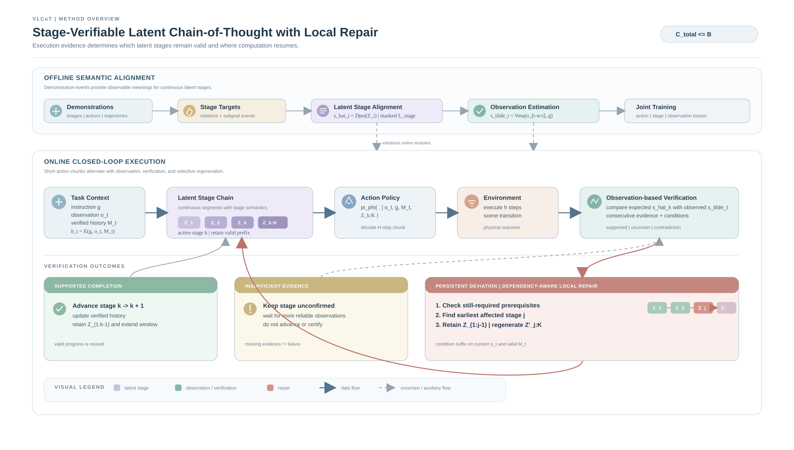
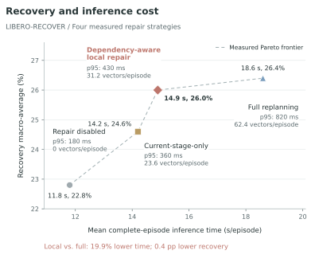
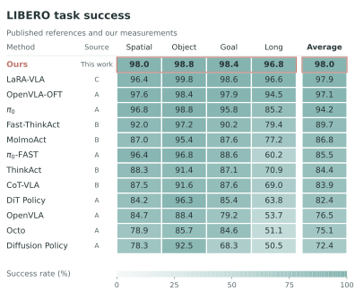

Make stages observable
Align latent segments with object relations and subgoal events from demonstrations. A decoder predicts each stage’s expected endpoint.
Expected outcomeAccepted at ICML 2026 / Robot learning
Verify progress.
Repair only what changed.
“Take the cube from the drawer
and place it in the tray.”
01 / The idea
Long tasks depend on intermediate progress. When execution deviates, some of that progress is still useful.
VLCoT gives continuous latent stages observable meanings, checks them against execution, and revisits the earliest affected stage. A verified prefix is reused only while its prerequisites still hold.
See how repair finds its starting point02 / The method
A shared stage semantics connects
reasoning to observed progress.
Align latent segments with object relations and subgoal events from demonstrations. A decoder predicts each stage’s expected endpoint.
Expected outcomeUse images and proprioception to verify progress. Supported completion advances the stage; insufficient evidence leaves it unconfirmed.
Observation-based evidenceAfter a persistent deviation, revisit still-required prerequisites. Keep the valid prefix and regenerate from the earliest affected stage.
Dependency-aware repair
Enlarge figureRepair starts at the current stage k, or an earlier stage whose still-required condition has been invalidated. “Verifiable” describes an observation-based interface, not a formal correctness guarantee.
03 / Inside the loop
Change the execution evidence.
Watch the scope of repair change.
Choose an observation
Schematic behavior from the method description. No model runs in your browser.
Consecutive valid observations support the grasp: update verified history and advance to placement.
If the drawer is still accessible, retain the opening stage and regenerate grasping and placement.
If retrieval still needs an open drawer and that condition is contradicted, repair starts at the opening stage.
Keep the stage unconfirmed. Missing evidence does not certify completion or justify a repair trigger.
A normal intermediate motion is not itself a failure. Likewise, releasing an object after successful placement does not invalidate a completed grasp.
04 / Recovery meets computation
Four measured strategies.
One reported evaluation setting.
Discrete measurements, not a budget sweep. All four strategies are nondominated among these points. The vertical axis shows a labeled detail range.

| Method | Recovery | Time / episode | p95 latency | Vectors / episode |
|---|---|---|---|---|
| Repair disabled | 22.8 | 11.8 | 180 | 0.0 |
| Full replanning | 26.4 | 18.6 | 820 | 62.4 |
| Current-stage-only suffix reconstruction | 24.6 | 14.2 | 360 | 23.6 |
| Dependency-aware local repair | 26.0 | 14.9 | 430 | 31.2 |
Same recovery instances, step limits and task-level budget. Mean complete-episode inference time includes all model calls and both successful and failed episodes. Shared visual encoding is counted once. p95 is observation-to-executable-action latency. Regenerated vectors count deviation-triggered repairs only, excluding ordinary rolling extensions. Table 6 · PDF p. 8 ↗
Local repair trades a small decrease in recovery for less computation. Full replanning has the highest measured recovery.
Original plot05 / Benchmark results
Published references provide context.
Controlled ablations test the components.
| Method | Source | Spatial | Object | Goal | Long | Average |
|---|---|---|---|---|---|---|
| Diffusion Policy | A | 78.3 | 92.5 | 68.3 | 50.5 | 72.4 |
| Octo | A | 78.9 | 85.7 | 84.6 | 51.1 | 75.1 |
| DiT Policy | A | 84.2 | 96.3 | 85.4 | 63.8 | 82.4 |
| OpenVLA | A | 84.7 | 88.4 | 79.2 | 53.7 | 76.5 |
| π₀-FAST | A | 96.4 | 96.8 | 88.6 | 60.2 | 85.5 |
| π₀ | A | 96.8 | 98.8 | 95.8 | 85.2 | 94.2 |
| OpenVLA-OFT | A | 97.6 | 98.4 | 97.9 | 94.5 | 97.1 |
| CoT-VLA | B | 87.5 | 91.6 | 87.6 | 69.0 | 83.9 |
| ThinkAct | B | 88.3 | 91.4 | 87.1 | 70.9 | 84.4 |
| MolmoAct | B | 87.0 | 95.4 | 87.6 | 77.2 | 86.8 |
| Fast-ThinkAct | B | 92.0 | 97.2 | 90.2 | 79.4 | 89.7 |
| LaRA-VLA | C | 96.4 | 99.8 | 98.6 | 96.6 | 97.9 |
| VLCoT | This work | 98.0 | 98.8 | 98.4 | 96.8 | 98.0 |
Published references and measurements from this work. Four suites, ten tasks per suite. VLCoT equally weights the four suite scores; published averages retain their original definitions. A: OpenVLA-OFT; B: Fast-ThinkAct; C: LaRA-VLA. Table 1 · PDF p. 7 ↗
| Method | Clean (Easy) | Randomized (Hard) |
|---|---|---|
| DP | 28.0 | 0.6 |
| ACT | 29.7 | 1.7 |
| RDT | 34.5 | 13.7 |
| π₀ | 46.4 | 16.3 |
| DP3 | 55.2 | 5.0 |
| VLCoT | 58.0 | 23.0 |
Per-task success, averaged over the 50-task benchmark. The reported protocol uses 50 clean demonstrations per task and 100 tests per clean/randomized condition. Published baselines retain their original settings. RoboTwin 2.0 (Chen et al., 2025). Table 2 · PDF p. 7 ↗
| Method | Clean (Easy) | Randomized (Hard) |
|---|---|---|
| DP | 43.1 | 0.6 |
| ACT | 45.5 | 3.5 |
| π₀ | 52.9 | 16.3 |
| RDT | 56.4 | 22.8 |
| ThinkAct | 62.4 | 24.7 |
| Fast-ThinkAct | 65.7 | 26.4 |
| VLCoT | 68.0 | 31.0 |
The ten-task subset follows the Fast-ThinkAct reference protocol. Its task coverage differs from the 50-task benchmark; these averages must not be combined or directly ranked against that benchmark. Fast-ThinkAct (Huang et al., 2026). Table 3 · PDF p. 7 ↗
| Method | L1 | L2 | L3 | L4 |
|---|---|---|---|---|
| π₀ | 46.1 | 24.4 | 13.5 | 4.6 |
| π₀-FAST | 40.0 | 22.9 | 16.1 | 3.7 |
| GR00T-N1.5 | 30.7 | 25.3 | 15.2 | 1.5 |
| OpenVLA-OFT | 47.7 | 26.6 | 14.2 | 5.6 |
| Wan2-Policy | 17.8 | 16.2 | 12.5 | 3.9 |
| Cosmos-Predict2-Policy | 15.5 | 14.5 | 9.9 | 0.0 |
| VLCoT | 52.0 | 32.0 | 20.0 | 9.0 |
Each level equally weights Spatial, Object, Goal and LIBERO-100. L1: action retry; L2: action adaptation; L3: object-state recovery; L4: environment-state recovery. These four columns do not average to the overall recovery statistic used in the controlled experiments. LIBERO-RECOVER (Liu et al., 2026). Table 4 · PDF p. 7 ↗

Enlarge figure +06 / What makes the difference
Separate stage alignment
from the use of repair at execution.
| Configuration | LIBERO avg. | LIBERO Long | Recovery | Stage F1 |
|---|---|---|---|---|
| Base policy: no latent reasoning | 96.8 | 94.2 | 20.5 | N/A |
| Auxiliary state supervision only | 97.1 | 94.8 | 21.3 | N/A |
| Without latent stage alignment | 97.2 | 95.0 | 22.1 | 81.6 |
| Execution-feedback repair disabled | 97.5 | 95.8 | 22.8 | 92.4 |
| Complete method | 98.0 | 96.8 | 26.0 | 92.4 |
Measured means from this work. Controlled implementations use matched initialization, splits, training trajectories, observation access and execution intervals. Recovery first pools instances within each suite, then equally averages the four suites. N/A denotes the absence of a latent-stage verification interface. Table 5 · PDF p. 8 ↗
Recovery trajectories change the training data. An initial-frame input changes the observations available to the model. Each augmentation is tested independently; their gains do not establish a combined effect.
| Method | Original | + Recovery data | + Initial frame |
|---|---|---|---|
| OpenVLA-OFT | 20.8 | 25.4 | 26.8 |
| GR00T-N1.5 | 17.8 | 21.2 | 18.9 |
| VLCoT | 26.0 | 31.0 | 28.0 |
Each augmentation is independently compared with the original configuration. Recovery instances are pooled within each suite before equally averaging the four suites. Recovery-data and initial-frame gains cannot be added to predict a joint result. Published baselines: LIBERO-RECOVER (Liu et al., 2026). Table 7 · PDF p. 8 ↗
07 / Evidence & scope
The training protocol uses three independent seeds for configurations requiring retraining. The tables do not provide standard deviations, confidence intervals, seed identifiers or run-level records. Small differences do not establish statistical significance.
Per-level recovery equally weights four suites, including LIBERO-100. Overall recovery first pools instances within each suite, then averages suites. Averaging the level columns is a different statistic. Undetected failures and budget exhaustion remain in the denominator.
Episode inference time includes encoding, planning, rolling extensions, verification, actions and repair, for successful and failed episodes. Shared encoding is counted once. p95 latency measures a different quantity: observation-to-action delay.
Environment-state recovery remains difficult, and performance drops under domain randomization. Real-robot transfer, an equal-success comparison, and a general success–budget frontier are not established by these experiments.
The site explains the supplied manuscript and reports its measurements. It does not reproduce the robotics experiments. Inspect the data and provenance ↗
08 / A closer look
The manuscript, reported numbers,
and the source of this project page.
Full manuscript and appendices.
Author-supplied version.
Reported tables, metric definitions,
source mapping and derived comparisons.
Website code and maintenance scripts.
Research implementation is not included.
Manuscript LaTeX/source is not included in this release. Training code, model weights, raw episode records and robot rollout videos were not supplied. The JSON files contain reported numerical summaries, not raw experimental data.
The downloadable PDF is the author-supplied ICML 2026 accepted manuscript with named authors, dated September 27, 2026. It contains 13 pages, including references and appendices. The file is preserved unchanged. All 162 numerical table entries agree with this version; source links use its table numbers and PDF pages.
@inproceedings{qiang2026vlcot,
title = {Stage-Verifiable Latent Chain-of-Thought with Local Repair for Long-Horizon Robotic Manipulation},
author = {Yirong Qiang and Jiahe Zhang and Ming Zhou and Yuxiu Pei and Lianlei Shan},
booktitle = {International Conference on Machine Learning},
year = {2026},
note = {Accepted; author-supplied manuscript},
url = {https://apromisedland.github.io/vlcot-paper-page/}
}
Citation uses the author-confirmed acceptance information. Proceedings volume, page numbers and DOI have not been supplied.